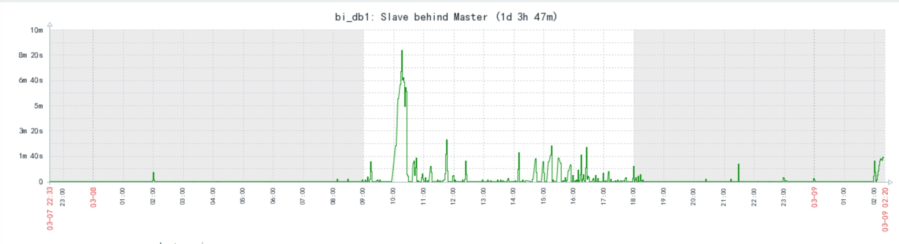
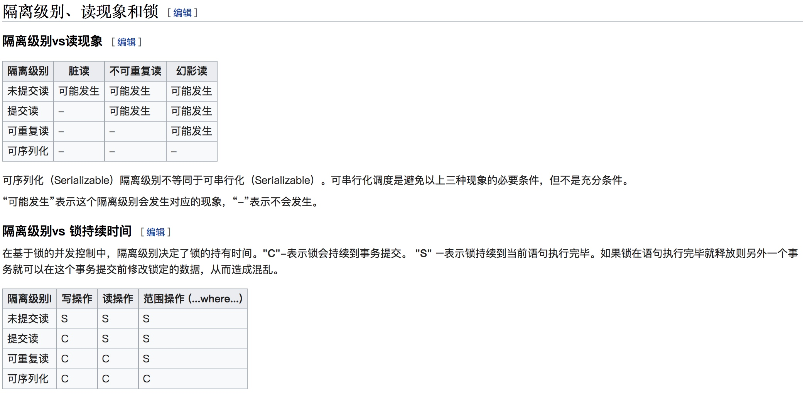

生产环境中有一台实时监控数据库binlog日志的应用，用于数据的实时统计等。
由于用来读取数据的库和线上主库是主从关系，因此存在在一定的延迟。
生产环境中，由于延迟的存在，有时候实时消息依赖的数据可能不会马上能够获取到。

有时候延迟还是比较恐怖的.
一开始的解决方案
由于延迟的时间不确定， 因此开发同学将这一块的逻辑进行了改进，那就是如果没有查到依赖的数据，那么线程进入睡眠，然后重试几次，如果仍然失败，那没办法， 记录错误日志，后面再手工进行处理。
然而事实表明，修复之后情况并没有缓解，而且本地模拟问题的时候依然会出现数据取不到的情况
排查问题
这让人百思不得其解，我们只好认为是代码的问题，因为我们监控了mybatis的查询执行情况，并且禁用了缓存，发现即时的查询并没有返回结果，这就变得很诡异了，这是什么情况？
也是出于偶然吧， 发现了方法上面的@Transcational注解，这个注解的默认事物隔离级别是repeatable_read，也就是可重复读, 简单说就是在同一个事物中，同一个查询不管在什么位置执行，得到的结果都是一样的， 不管其他会话有没有改变当前的数据。
解决问题
尝试更改隔离级别，但似乎无效，可能spring或者驱动支持有限.
后来暂时干掉了事务注解，解决了问题
附
